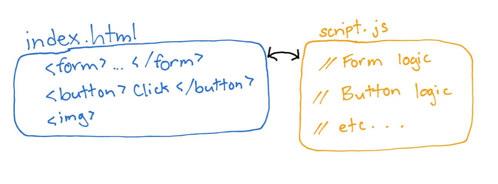
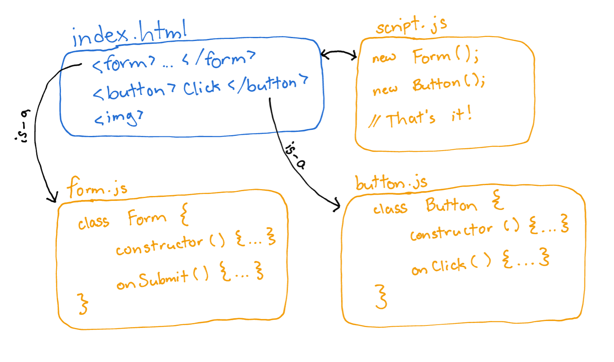

A front-end methodology/framework that rejects traditional page scripting and implements object-oriented principles into front-end development. It creates modular, reusable components which handle their own logic and properties internally.
Why does object-oriented programming seem to translate so poorly to front-end web development? We spend so much time in Java and other C-based languages learning about classes, inheritance, design patterns, etc. But when a good ol’ web front-end needs to be built, most of those principles seem to be tossed out the window. Why?
A lot of this has to do with a paradigm I call “page-based scripting”. I don’t blame anyone for approaching JavaScript this way - it’s the most logical place to start, especially for newcomers.
Imagine a basic web setup: an index.html, style.css, and script.js. The HTML file is responsible for building the page structure, and outlines all the components: forms, buttons, images. The CSS file makes it all look pretty (we’ll just ignore that for now, there are plenty of resources out there to help write beautiful and maintainable styles). And the JavaScript file initializes functionality and responds to user input. script.js has the job of organizing and implementing functionality for the entire page.
So what’s the problem with this setup? Well, this “page-based scripting" approach:
ChainLink uses JavaScript classes and instantiates objects linked with their front-end code. These objects are responsible for their own functionality, and only require a small amount of driver code to be initialized.
A ChainLink front-end architecture might look like this:
This diagram oversimplifies things a little, but hopefully the idea is clear. With this approach:
ChainLink is built with the following frameworks:
ChainLink provides two basic Template classes, which can be extended to create your own templates:
View the project README for code examples and specific instructions on how to use these classes to build your own templates.
ChainLink is built around a simple idea, and it takes a relatively small amount of code to implement the foundation. You are welcome to download, install, and use ChainLink files like any framework. You are also welcome to build your own version (let me know when you do because I’m sure yours will be better and I’ll be curious).
Pros:
Cons: